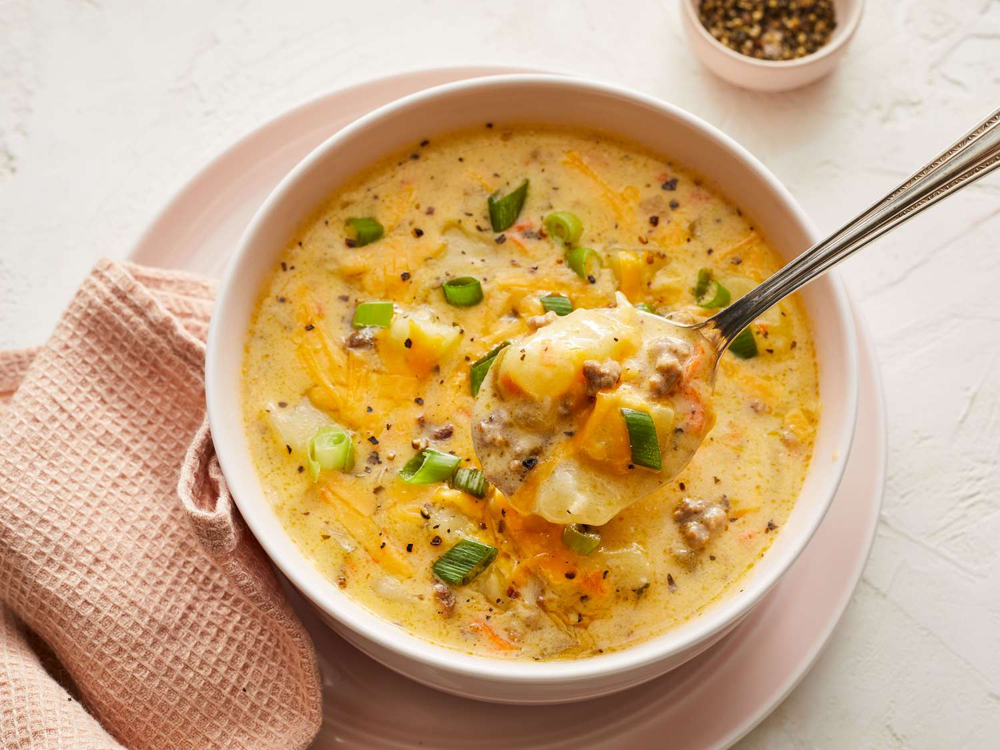

Delicious Cheeseburger Soup

An award-winning soup!
Cheeseburger Soup is a thick and hearty soup with lean, tender ground beef, shredded carrots, diced celery and potatoes in a warm and creamy cheese soup. This is an excellent, cozy soup that's perfect to keep you warm during the winter months!
Ingredients:
- Ground beef: use one pound
- Onion: chopped
- Carrots: shredded
- Celery: diced
- Basil: dried
- Parsley flakes: added seasoning and flavor
- Butter: used for sautéing and thickening the soup
- Chicken broth: adds flavor and volume
- Potatoes: peeled and diced
- Flour: thickens the soup up
- Velveeta: this a processed cheese that will be cubed or use 2 cups of shredded cheddar cheese
- Milk: creamy and smooth
- Salt and pepper: just a pinch!
- Sour cream: thickens and adds flavoring to the soup
Steps:
- Cook the beef: Brown the ground beef in 3 quart saucepan. Drain and set aside.
- Sauté vegetables: In the same saucepan add 1 T butter and add onion, shredded carrots, parsley flakes, basil and celery. Saute until tender.
- Add in beef and potatoes then simmer: Add the broth, potatoes and beef and bring to a boil. Reduce heat, cover and simmer 10-12 minutes or until potatoes are tender.
- Make a roux: In a small skillet melt remaining butter (3 T) and add the flour. Cook and stir for 3-5 minutes or until bubbly. Add to the soup and bring to a boil. Cook and stir for 2 minutes. Reduce heat to low.
- Add in remaining ingredients and cook: Stir in the cheese, milk, salt and pepper. Cook and stir until cheese melts. Remove from heat and blend in sour cream.